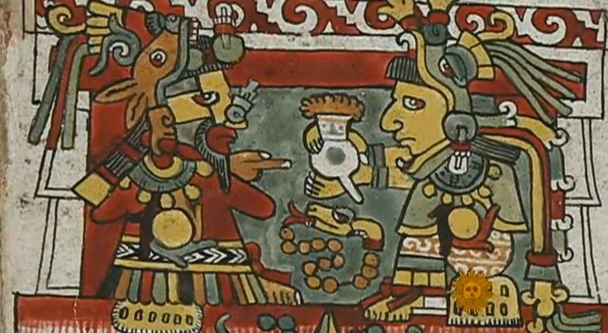

Historie a současnost
Když Kryštof Kolumbus objevil Ameriku, nejen že netušil, že objevil nový kontinent, ale také netušil, že tím také vytvořil předpoklad k objevu „čokoládového světa“. Dějiny čokolády začaly až 15. března 1519, kdy dobyvatel Hernando Cortéz přistál u mexických břehů. Když se Cortéz zmocnil kvetoucí říše Aztéků, nalezli španělští vojáci v paláci císaře Montezumy velké zásoby kakaových jader. Z nich byl pro císaře a jeho dvůr připravován nápoj a placky chocolatl.

Tuto drahocennou potravinu připravovali tak, že boby sušili na slunci, pak pražili, odstranili z nich slupky a drtili mezi kameny. Vzniklou hmotu mísili s vanilkou a jiným kořením a sladili medem. I když tento hustý nápoj zdaleka nebyl tak lahodný jako kakao které pijeme dnes, byl to nápoj velmi vzácný a pít ho mohli jen vyvolení.
Také samotné boby získávané z kakaovníku (ty původně rostly jen v pralesích Jižní Ameriky), byly velmi drahé a sloužily i jako platidlo. Za 10 bobů byla dobrá večeře, za 100 statný otrok.
I když byl tento nápoj, míchaný podle indiánské receptury, americkými objeviteli vychvalován a doporučován pro své povzbuzující účinky, u Evropanů se obliby nedočkal. Teprve, když v polovině 16. stol. misionářky v Mexiku vymyslely nový recept a do kakaové hmoty přidaly cukr, vznikl tak nápoj nejen výživný ale také chutný.
Netrvalo dlouho a tento nápoj se rozšířil po všech šlechtických sídlech v celém Španělsku. Byl výsadou vyšších vrstev, které byly ochotny náležitě zaplatit. V polovině 17. stol. se např. za jeden kilogram bobů platilo až 3 kg zlata! Od Indiánů byly totiž dobře známy silně povzbuzující účinky tohoto nápoje. V 18. století tak francouzské šlechtičny hojně napájely nejen sebe ale i své milence.
© 2022 | Čokoláda